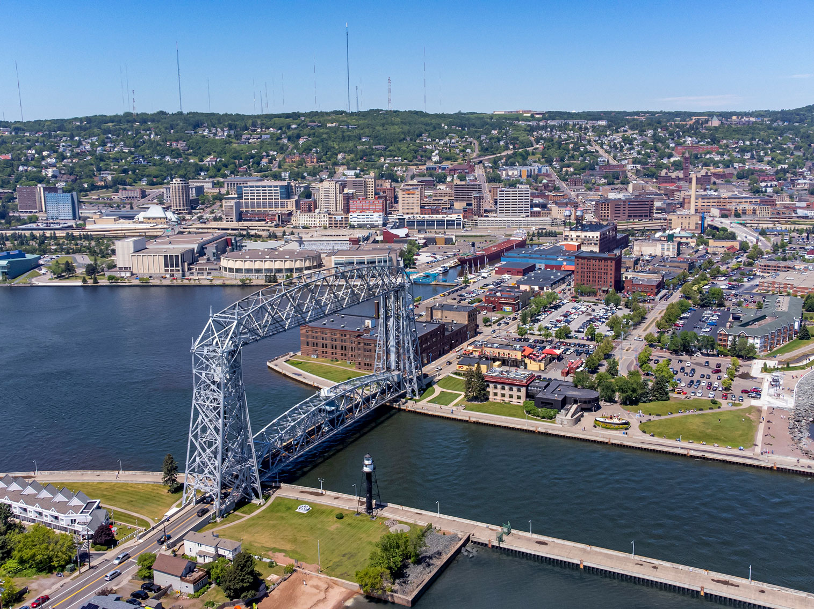
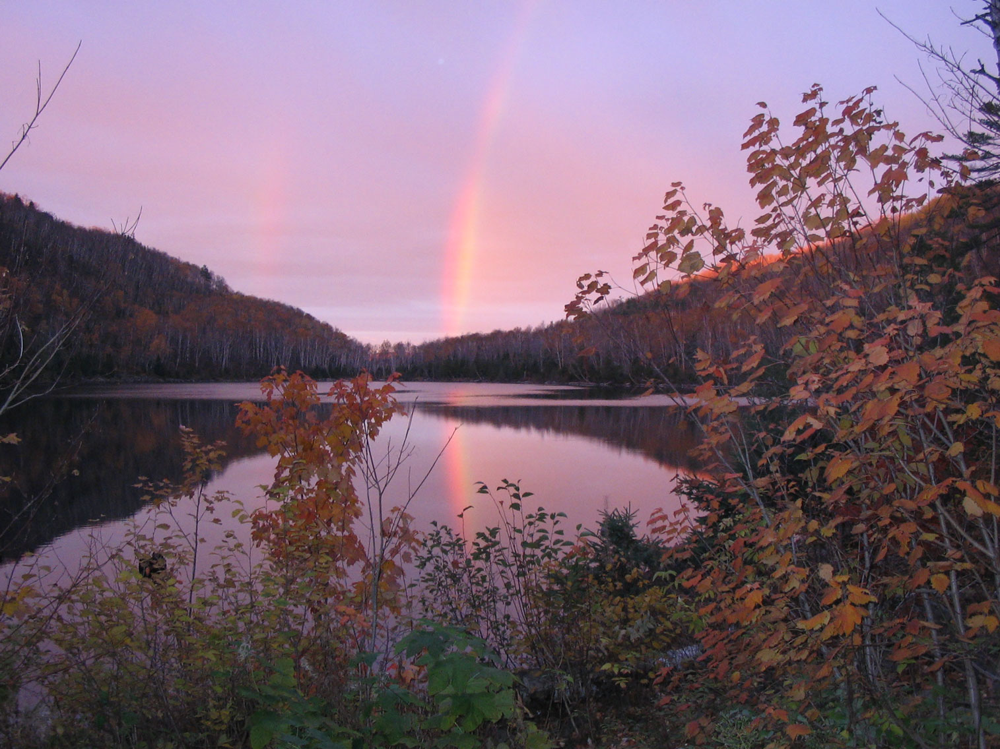
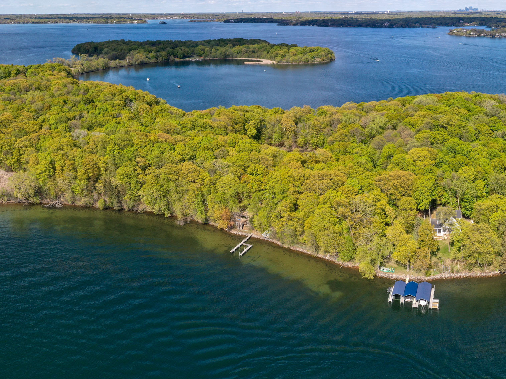

Minnesota Travel Guide
Discover the Land of 10,000 Lakes: canoe the Boundary Waters, explore the Twin Cities' culture, and hike Minnesota's peaceful North Woods.
Top Locations

Minnesota Map
Places to See in Minnesota

Duluth, MN
Chrisographer, CC BY-SA 4.0, via Wikimedia Commons; Image Size Adjusted

Cities
Rainy Lake at Kettle Falls
Jeffkantor, CC BY-SA 4.0, via Wikimedia Commons; Image Size Adjusted

Voyageurs National Park
National park commemorating the voyageurs—French-Canadian fur traders who were the first European settlers to frequently travel through the area and is notable for its outstanding water resources, and is popular with canoeists, kayakers, other boaters, and fishermen.

Kjell Olsen from Minneapolis, USA, CC BY-SA 2.0, via Wikimedia Commons; Image Size Adjusted
.jpg){kind=link}
Minnesota North Shore
Rugged cliffs, cobblestone beaches, forested hills, waterfalls, and scenic trails create a landscape known for outdoor recreation and expansive freshwater views.

Big Island, Lake Minnetonka
August Schwerdfeger, CC BY 4.0, via Wikimedia Commons; Image Size Adjusted

Landmarks and Landscapes
Overview
Minnesota is a Great Lakes state of about 5.7 million people, known as the "Land of 10,000 Lakes," with big-city culture in the Twin Cities and wilderness in the north. Minneapolis and neighboring Saint Paul, the capital, are the largest cities, and the state's name comes from the Dakota word for "sky-tinted water."
Visitors come for the canoeing and camping of the Boundary Waters and Voyageurs National Park, the rocky shore of Lake Superior at Duluth and the North Shore, and the lakes of Lake Minnetonka. Others come for the Twin Cities' arts, music, and food scene, the Mall of America, the State Capitol, and Paisley Park.
Geography
Minnesota lies at the headwaters of the Mississippi River, which begins at Lake Itasca, and borders Lake Superior in the northeast. The state has forests and lakes in the north, rolling prairie and farmland in the south and west, and the Driftless Area bluffs along the southeast. Eagle Mountain, at 2,301 feet (701 m), is the highest point, and the Minnesota, St. Croix, and Red Rivers are other major waterways. The state has more than 11,000 lakes larger than ten acres.
History
The Dakota and Ojibwe (Anishinaabe) peoples lived in the region when French fur traders arrived in the 1600s. The United States gained eastern Minnesota after the Revolution and the west through the Louisiana Purchase, and Minnesota became the 32nd state in 1858. Fort Snelling, flour mills at St. Anthony Falls, logging, and iron ore from the Mesabi Range drove growth, and Scandinavian, German, and other European immigrants settled the farmland. In 1862 the U.S.-Dakota War shaped the state's history, and today the state is known for health care, agriculture, and arts.
North Shore of Lake Superior
The North Shore is a 150-mile stretch of Lake Superior shoreline from Duluth to the Canadian border, and it is one of the most scenic drives in the Midwest. Highway 61 passes cliffs, rocky coves, forests, and rivers that tumble into the lake over waterfalls. In Duluth, the Aerial Lift Bridge raises to let ore freighters and ocean-going ships pass through the harbor, and Canal Park has shops and restaurants. Farther up the shore, Gooseberry Falls has a series of cascades, the Split Rock Lighthouse sits atop a 130-foot cliff, and Tettegouche has overlooks and waterfalls. Grand Marais is an artists' town near the Gunflint Trail, and Grand Portage National Monument preserves a fur-trading post. The Superior Hiking Trail follows the ridge above the lake, and agates can be found on the beaches.
Minneapolis and St. Paul
Minneapolis and St. Paul, the Twin Cities, sit on opposite banks of the Mississippi River and together form the economic, cultural, and political center of Minnesota, with a metro population of about 3.7 million. Minneapolis, the larger city, has a thriving arts scene with the Walker Art Center and its Sculpture Garden, the Minneapolis Institute of Art, and the Guthrie Theater. The historic flour mills are remembered at the Mill City Museum and the Stone Arch Bridge, and the chain of lakes includes Lake of the Isles and Bde Maka Ska. First Avenue, the club made famous by Prince, is a landmark, and Paisley Park is in nearby Chanhassen. St. Paul, the state capital, has the State Capitol, the Cathedral of Saint Paul, the Science Museum of Minnesota, the Como Park Zoo and Conservatory, and the Minnesota History Center. The Mall of America in Bloomington is the largest shopping and entertainment complex in the country.
Voyageurs National Park
Voyageurs National Park, on the Canadian border in northern Minnesota, is a water-based park of lakes, islands, and boreal forest named for the French-Canadian fur traders who paddled the region's waterways. About 40 percent of its 218,000 acres is water, and most of the park can be reached only by boat or, in winter, by snowmobile and ski. The main lakes are Rainy Lake, Kabetogama Lake, and Namakan Lake, and visitors can rent houseboats, paddle canoes, and fish for walleye, northern pike, and smallmouth bass. Highlights include Kettle Falls, with the historic Kettle Falls Hotel, which was built in 1910, the Ellsworth Rock Gardens, and hiking trails such as the Blind Ash Bay Trail and the Kab-Ash Trail. The park is a dark-sky area where northern lights can be seen, and wildlife includes wolves, bald eagles, loons, black bears, and moose.
National Protected Areas
Minnesota's national park sites include Voyageurs National Park, a water-based park of lakes and islands near the Canadian border, and Pipestone National Monument, where Native Americans still quarry sacred red pipestone. The Mississippi National River and Recreation Area protects 72 miles of river through the Twin Cities, Grand Portage National Monument preserves a fur-trade site, and the St. Croix National Scenic Riverway and the North Country National Scenic Trail also cross the state.
State Parks and Historic Sites
Minnesota has more than 60 state parks. Interstate Park at Taylors Falls has potholes carved by glaciers, Blue Mounds has a bison herd and prairie, Itasca State Park is the source of the Mississippi, and Gooseberry Falls, Split Rock Lighthouse, and Tettegouche protect the North Shore. Fort Snelling and Mille Lacs Kathio are historic sites, and Franconia Sculpture Park is a free outdoor art museum.
Seasons and When to Visit
Summer is warm and ideal for canoeing, fishing, and the lakes, and the Minnesota State Fair runs through Labor Day. Fall brings brilliant color along the North Shore in late September, and spring has high water, waterfalls, and migrating birds. Winter is long and very cold, but the state embraces it with ice fishing, cross-country skiing, snowmobiling, the Saint Paul Winter Carnival, and northern lights viewing in the Boundary Waters.
This article uses material from the Wikipedia article "Minnesota", which is released under the Creative Commons Attribution-Share-Alike License 3.0. Additional information was drawn from National Park Service, Minnesota State Parks, and Explore Minnesota.